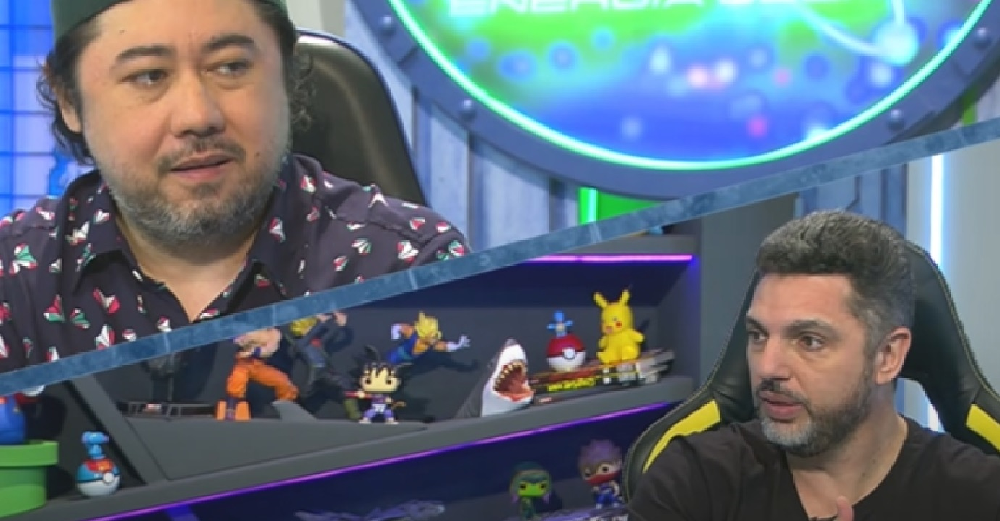

O Antimatéria: Energia Geek desta segunda-feira (10) comentou o lançamento da oitava e última temporada de "My Hero Academia", já disponível no Crunchyroll (streaming).
Durante o episódio, os apresentadores Anderson Abraços e Jeff Kayo observaram que, diferente das temporadas anteriores, que contaram com cerca de 20 episódios, esta será mais curta, com 11 episódios. Eles também destacaram que o segundo episódio da nova temporada já conta com nota 9,6 no IMDb.
A equipe de produção se mantém a mesma da sétima temporada, com Kenji Nagasaki como diretor-chefe, Naomi Nakayama na direção e o estúdio BONES responsável pela animação.
“Eu fico muito feliz com a série, com os personagens e com alguns spin-offs — como My Hero Academia: Vigilantes — que estão rolando. Mas eu queria muito um spin-off ou um filme que mostrasse a Nana Shimura com o All Might jovem”, comenta Jeff.
Durante o programa, Anderson e Jeff também discutem se Kohei Horikoshi, autor do mangá, cederá à pressão dos fãs e fará alguma alteração no final do anime ou se seguirá fielmente o desfecho da história original.
Exibido de segunda a sexta-feira, às 18h30, e com edição inédita aos sábados, o Antimatéria: Energia Geek é apresentado por Anderson Abraços, Clayton Ferreira e Jeff Kajo. Atualmente, é o único programa da TV aberta brasileira totalmente dedicado à cultura pop.
Assista ao programa completo: